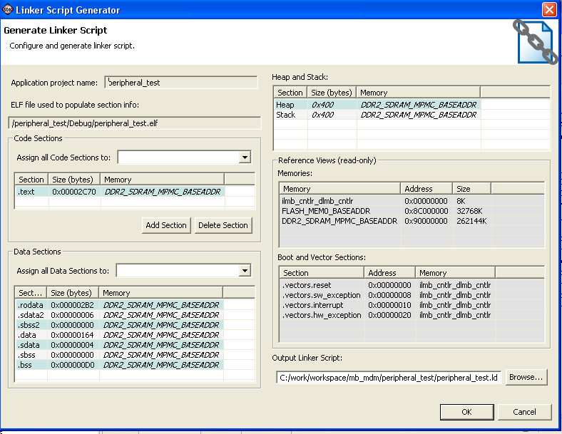

Linker scripts
You can use the Linker Script Generator dialog box to create a linker script for the software application. To open it, select Tools > Generate Linker Script.

The Linker Script Generator dialog box contains the following functions:
| Name | Function |
|---|---|
| Application Project Name | Displays the name of the software application project. |
| ELF File Name | Displays the ELF files used to populate the section info in the dialog box. |
| Code Sections | Displays the code sections of the ELF file. |
|
Select a memory region to which to assign all code sections. |
| Data Sections | This section of the dialog box displays the data sections of the ELF file. |
|
Select a memory region to which to assign all data sections. |
| Section | The tables in these areas list sections with their size and memory attributes. |
|
Name of the ELF file section. |
|
Size of the ELF file section, in bytes. This is '0' if the ELF file does not
exist. |
|
The memory region to map the ELF section. |
Add Section |
Use this button to add a section to the ELF file. |
|
Use this button to delete a section from the ELF file. Note: Some sections are needed in the ELF file and cannot be deleted. |
| Heap and Stack | Specifies the Heap/Stack size and memory region for the ELF file. |
| Reference Views | Displays the read-only details for the linker script. |
Memories |
Displays the available memory in the system and its properties. |
Boot and Vector sections |
Displays the address location where the boot and vector sections have been assigned. |
| Output Linker Script | Specify the name of the generated linker script. This linker script will be added to the linker option of the software application |

Creating a linker script
Specifying a linker script
Copyright © 1995-2009 Xilinx, Inc. All rights reserved.